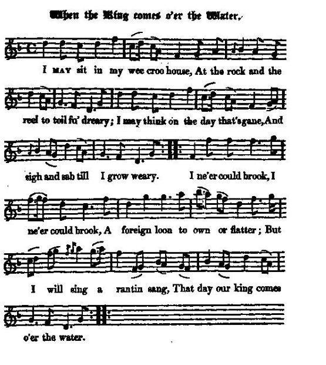
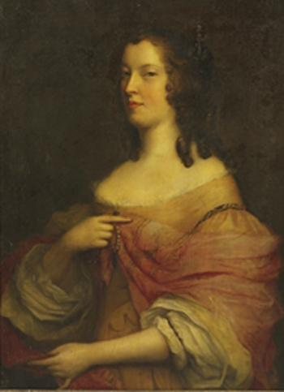

When the King comes over the water - Lady Keith's Lament
Le jour où notre Roi foulera ces rives - Complainte de Lady Keith
Ascribed to Mary Drummond, Lady Keith
from / tiré de Hogg's "Jacobite Reliques" 1st volume, N° 27Tune - Mélodie
When the King comes o'er the water
Sequenced by Christian Souchon

|
To the tune:
Derived from "The Battle of the Boyne," this tune is also known as the (antijacobite) "King William's March" or "When the King comes o'er the (Boyne) Water". This slow air dating back to the 17th century, was first published in Gow's "Complete Repository, Part 3" in 1806. Source "The Fiddler's Companion" (see Links). |
A propos de la mélodie:
Apparentée à "The Battle of the Boyne," également connue comme la "Marche du roi Guillaume" (antijacobite) ou "Quand le roi franchira l'eau (de la Boyne)", cette lente mélodie remonte au 17 ème siècle, mais on la trouve publiée pour la première fois dans le recueil de Gow, "Complete Repository, 3ème partie" en 1806. Source "The Fiddler's Companion" (cf. liens). |

|
1. I may sit in my we_e cro_o hoose
At the rock and the reel t_ae toil fu' dreary I may think on the d_ay tha_t's gane A_nd sigh a_nd sob ti_ll I grow weary I ne'er could brook, I ne'_er could brook A foreign loon tae o_wn o_r flatter But I_ wi_ll sing a_ ranti_n' sa_ng Tha_t day oo_r King co_mes ower the water. (twice) 2. I hae seen the guid auld day The day o' pride and chieftain's glory Whan Royal Stuart bare the sway And ne'er heard tell o' Whig or Tory Tho' lyart be my locks and grey And auld has crook't me doon, what matter I'll dance and sing ae ither day That day oor King comes ower the water 3. Gin I live tae see the day That I hae begged and begged frae heaven I'll fling my rock and reel away And dance and sing frae morn till even For there is ane I wadna name Wha comes the beengin' byke tae scatter And I'll put on my bridal goon That day oor King comes ower the water 4. Curse on dull and drawling Whig The whining, ranting, low deceiver Wi' heart sae black and look sae big And cantin' tongue o' clishmaclaver My faither was a guid Lord's son My mither was an Earl's daughter And I'll be Lady Keith again That day oor King comes ower the water. |
 Lady Keith by John Michael Wright |
1. Ah, je m'échine à tourner un rouet
Et je vis en une humble chaumiè_re. Pensant à chaque jour ainsi passé, J'ai les yeux pleins de larmes amè_res. S'avilir devant un traître étranger: De cette honte à dessein je me prive Quel hy_mne de joie j'e_ntonne_rai, Le jour où notre roi foulera ces ri_ves! (bis) 2. J'ai pu vivre encore ce temps béni Où nos chefs fiers se couvraient de gloire Nul alors n'était ni Whig, ni Tory. Les rois Stuart écrivaient notre histoire. Bien que le poids des ans pèse sur moi, Que mes cheveux n'aient plus leur teinte vive, Je danserai jusque après minuit, Le jour où notre roi foulera ces rives. 3. Ce beau jour, puissé-je encore le voir, Lui que j'appelle de mes prières. Et l'on me verra danser jusque au soir Délaissant les tâches ancillaires, Pour celui qu'ici je ne nomme pas Qui l'abeille de la ruche délivre; Vêtue de ma robe d'apparat, Le jour où notre roi foulera ces rives. 4. Ah qu'ils soient maudits, tous ces Whigs sournois Tous ces pleurnicheurs, fourbes cyniques, Cette bande d'écornifleurs matois, Ces coeurs noirs sous des airs magnifiques! Car ma mère était Comtesse, de lords, Par mon père aussi ma race dérive. Et je serai Lady Keith encor, Le jour où notre roi foulera ces rives. (Trad. Ch.Souchon (c) 2004) |
|
"
Lady Mary Drummond
, daughter of the Earl of Perth, was the heroine of this song and is also supposed to be the
authoress
of it. She was a Roman Catholic and so strongly was she attached to the Stuarts, when her two sons returned to Scotland, she never ceased to importune them, not withstanding the fearful danger attending it, till they engaged actively in the cause of the exiled family."
Source: Hogg's Jacobite Relics She was the daughter of James Drummond, 4th Earl of Perth and Lady Jean Douglas. She married William Keith, 8th Earl Marischal circa 1690, when her married name became Keith. She died in 1712. Her two sons referred to in Hogg's note were George Keith, 9th Earl Marischal (1692 - 1778) and Field Marshal James Keith (1696 - 1758). George Keith commanded the Jacobite right wing in the Battle of Sheriffmuir (13 November 1715) and led the 1719 Jacobite uprising. James fought in the Jacobite Rising in 1715 and was attainted in 1716. He served in the Spanish, Russian and in the Prussian Army where he gained the rank of Field Marshal Source: The Peerage.com |
"
Lady Marie Drummond
, fille du Comte de Perth, est l'héroïne de ce chant dont on suppose également qu'elle est l'
auteur
. C'était une catholique si farouchement attachée à la cause des Stuarts que lorsque ses deux fils revinrent en Ecosse, elle n'eut de cesse qu'ils s'engagent activement en faveur de la famille royale exilée, malgré les dangers redoutables qu'une telle option impliquait."
Source: Hogg's Jacobite Relics C'était la fille de James Drummond, 4ème Comte de Perth et de Lady Douglas. Elle épousa William Keith, 8ème Comte Marischal vers 1690, date à laquelle elle prit le nom de Keith. Elle mourut en 1712. Ses deux fils dont parle Hogg sont George Keith, 9ème Comte Marischal (1692 - 1778) et le maréchal James Keith (1696 - 1758). George Keith commanda l'aile droite Jacobite à la bataille de Sheriffmuir (13 novembre 1715) et prit la tête du soulèvement Jacobite de 1719. James prit part au soulèvement Jacobite de 1715, fur déchû de ses droits en 1716. Il servit dans les armées espagnole, russe et prussienne où il fut fait maréchal. Source: The Peerage.com |